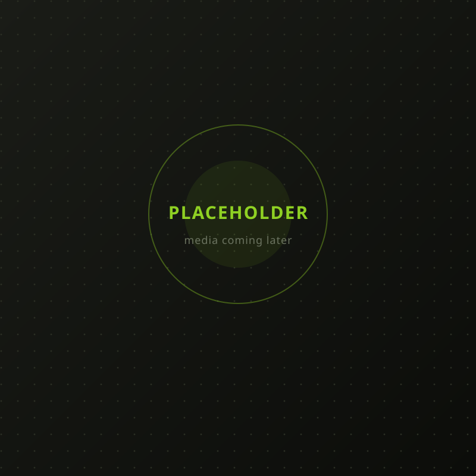

Soft Skills: The missing piece in employability
India must rethink employability by using AI-driven teaching methods to unlock youth potential.
Gen AI and women's employability
Generative AI could be a game-changer for women's employability, if approached with inclusion at its very core.
CSR 2.0: How can it be optimised in the age of GenAI
Generative AI poses risks of job loss and irrelevance — Samyak Chakrabarty urges safeguarding India's next generation.
HarperCollins India to publish Navya Naveli & Samyak Chakrabarty's new book
"The Map" is a journey for India's GenZ to explore identity, work purpose, dopamine loops and morality.

Breakthroughs happen between disciplines, not inside them. I operate as the central dot that connects and enables all dots to solve what no single expert can.
What I Build
Technology alone doesn't move anything. Neither does science, storytelling or capacity building. Impact happens when these levers operate as one system. I build and lead those systems.
Abilities
Click a card to see more
Journey
Publication, Media & Awards
Media